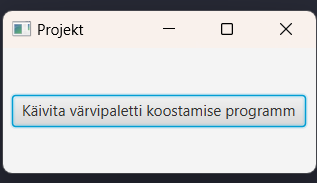
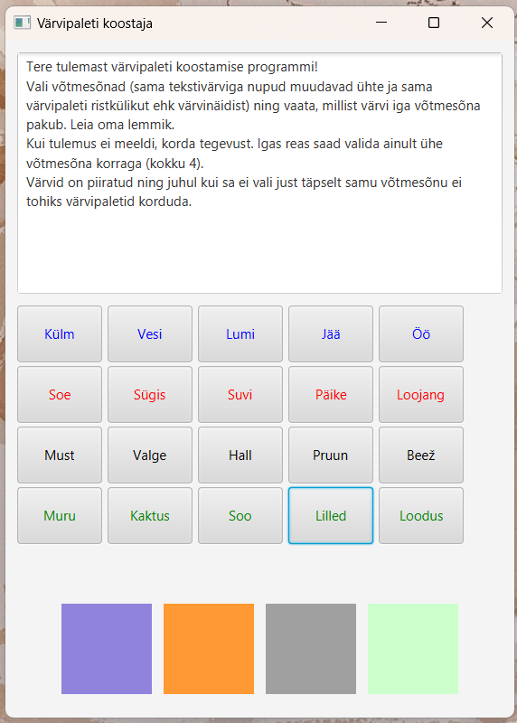

Tutvustame Tamagotchit, revolutsioonilist virtuaalset lemmikloomakogemust, mis pakub teile tundideks meelelahutust! Hoolitse oma imearmsa digitaalse kaaslase eest, toida teda, mängi temaga ja vaata, kuidas ta kasvab. Ole ettevaatlik, Tamagotchi tähelepanuta jätmine võib kaasa tuua lõbusaid tagajärgi!
Kas olete väsinud oma projektide jaoks ideaalsete värvikombinatsioonide leidmisest? Oleme su jaoks olemas! Meie värvimustri valija on siin, et päästa päeva. Sisestage lihtsalt oma eelistused ja laske sellel programm loob ilusaid ja pilkupüüdvaid värvilahendusi just teie jaoks. Disaini nagu professionaal kiiresti!
 